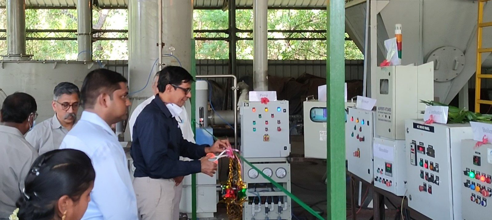
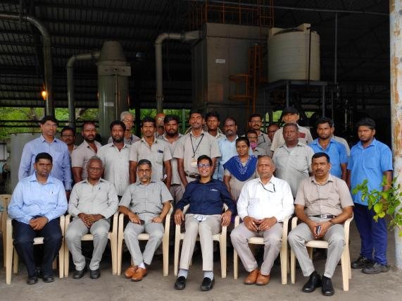
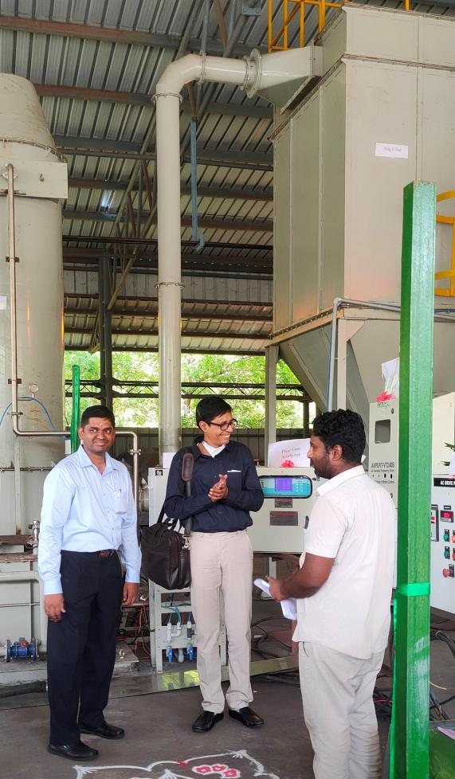

Professor, Department of Chemical Engineering Indian Institute of Technology Madras
Prof. Vinu Ravikrishnan leads the Chemical Reaction Engineering in Sustainable Transformations (CREST) Research Laboratory at IIT Madras, with research spanning thermochemical conversion, catalytic upgradation, reaction kinetics, and scale-up for sustainable energy systems.
Citation metrics from Google Scholar, as of November 2026
01Biography
Fifteen years of reaction engineering.
Prof. Vinu Ravikrishnan’s career spans over 15 years of chemical reaction engineering research at premier international institutions. He earned his Ph.D. from the Indian Institute of Science (IISc), Bangalore, under Prof. Giridhar Madras, earning the esteemed best thesis award.
Following a postdoctoral tenure at Northwestern University, USA, under Prof. Linda J. Broadbelt in mechanistic kinetics modeling, he joined IIT Madras in 2012. He continues to steer sustainable transformations by designing unprecedented porous materials, process loops, and catalytic cracking models.
15
Ph.D. guidance
Graduated and ongoing doctoral scholars
7 + 35+
Masters guidance
M.S. (Research) and M.Tech. student theses
₹27 Cr+
Grants & funding
₹15+ Cr government grants and ₹12+ Cr industrial support
02Career & credentials
From IISc and Northwestern to IIT Madras.
Professional experience
Nov 2022 – Present
Professor
Dept. of Chemical Engineering, IIT Madras
Jul 2017 – Oct 2022
Associate Professor
Dept. of Chemical Engineering, IIT Madras
Jun 2012 – Jun 2017
Assistant Professor
Dept. of Chemical Engineering, IIT Madras
Jul 2010 – May 2012
Postdoctoral Research Assistant
Northwestern University, IL, USA
Academic credentials
Jan – Jun 2025
Director’s Certification Program
Corporate Governance, Indian Institute of Corporate Affairs (IICA)
Apr 2011
Business for Scientists
Kellogg School of Management, Northwestern University, USA
2006 – 2010
Ph.D. Chemical Engineering CGPA 7.92/8.0
Indian Institute of Science Bangalore Advisor: Prof. Giridhar Madras
2002 – 2006
B.Tech. Chemical Engineering CGPA 9.43/10.0
A.C. College of Technology, Anna University, Chennai
03Awards & honours
Recognised by academies and peers.
Top 2%
Top 2% Scientist worldwide in the sub-field of Energy
Elsevier & Stanford ranking, 2021–2024
2020Young Scientist Award, Academy of Sciences, Chennai
2019ICT Alkyl Amines Young Scientist Award, ICT Mumbai
2019Young Engineer Award, Institute of Engineers India
2018–19Keshav Ranganath Award (Best Ph.D. thesis guide)
2018NASI-Young Scientist Platinum Jubilee Award
2018INSA Young Scientist Medal
2018Institute Research and Development Award (Early Career), IIT Madras
2017Amar Dye-Chem Award for Excellence in R&D, IIChE
2017–20Young Associate, Indian Academy of Sciences
2017Certificate of Editorial Excellence, Advanced Powder Technology
2016Member, National Academy of Sciences India (NASI)
2016M.H. Shukla Prize, Best Technical Paper, IIChE
2015Young Faculty Recognition Award, IIT Madras
2010–11Prof. N.R. Kuloor Memorial Medal, Best Ph.D. thesis, IISc
2006–08G.E. Foundation Scholarship
04Service & memberships
Editor, reviewer and adviser.
Professional editorial service
Editor
Journal of Analytical and Applied Pyrolysis (Dec 2018–Present)
Editor
Advanced Powder Technology (2016–2022)
Editorial Board
Biomass & Bioenergy, Scientific Reports, Frontiers in Fuels
Co-ordinator
Waste Management (IGCS) (2020–2024)
Committees
MoPNG Biofuels Sub-committee (2018); NITI Aayog Circular Economy Sub-group (2021)
Active Reviewer
Reviewed >600 manuscripts (~60–70/year)
Guest Editor
Special issues in Energies and JAAP
Memberships
Life Member: IIChE
Life Member: IEI (Kolkata)
Life Member: BRSI
Life Member: CEEW
Member: American Chemical Society (ACS)
Nominated Member: NASI (Allahabad)
05Courses taught
Teaching at IIT Madras.
Syllabi instructed and laboratory modules headed over academic tenures.
CH3020
Chemical Reaction Engineering II
Jan.–May 2013, 2014, 2015, 2016
CH3160
Polymeric Materials
Jul.–Nov. 2013, 2014, 2015, 2016; Jan.–May 2020
ID1200
Ecology and Environment
Jul.–Nov. 2013, 2014; lectures on bioenergy
CH5018
Biomass Conversion Processes and Analysis
Jan.–May 2017, 2018, 2019; Jul.–Nov. 2022, 2023
CH5010
Chemical Reactor Theory
Jan.–May 2017; Jul.–Nov. 2019, 2020, 2021
CA5350
Catalysis in Petroleum Technology
Jan.–May 2018, 2019, 2020, 2021; Jul.–Nov. 2022
CH3510
Mechanical Operations Lab
Jul.–Nov. 2012, 2013, 2014
CH4510
Chemical Reaction Engineering Lab
Jul.–Nov. 2015, 2016, 2017
CH3520
Heat and Mass Transfer Lab I
Jul.–Nov. 2017, 2018
CH5026
Transport Phenomena for Catalysis
Jan.–May 2023, Jan.–May 2024
06Research contributions
From the chemistry of pyrolysis to plants in the field.
The major contributions of Prof. Vinu Ravikrishnan are in the domain of thermochemical conversion and valorization of renewable and waste feedstocks to high quality fuel intermediates and bioenergy. Specifically, the recent works from his group have showcased that co-pyrolyzing lignocellulosic biomass with waste polymers can be beneficial to enhance the quality of bio-oil in terms of increasing the hydrocarbon content, long chain (C8–C20) alcohols, and heating value. Importantly, his group is the first in the world to demonstrate the application of hyphenated Pyrolysis-FTIR spectrometric technique to unravel the reaction timescales and kinetics of fast pyrolysis process, which is of the order of seconds, to produce biofuels. This technique has been validated for a variety of feedstocks such as biomass, lignin, microalgae, plastics, and biomass-polymer mixtures, and for the high pressure hydropyrolysis process.
He has demonstrated the use of low power microwave-assisted pyrolysis technique for the production of liquid bio-oil, nanoporous biochar and carbon nanotubes from renewable and non-renewable feedstocks like biomass, lignin, polymers, municipal solid wastes, e-wastes and coal, with reasonable process efficiency of 60–70%. Extensive studies were performed to convert the waste and invasive biomass species, Prosopis juliflora, to bio-oil, torrefied biochar and activated biochar. More importantly, the production of superior quality bio-oils from microwave-assisted co-pyrolysis of biomasses (like rice straw, bagasse) with plastics (PP, PS, PE) followed by catalytic upgradation is demonstrated with support from GAIL (India) Ltd. The co-pyrolysis bio-oils are shown to be similar to LFO (light fuel oil) and HFO (heavy fuel oil) in terms of thermophysical properties.
In the domain of process intensification, Vinu has provided solutions to Shell to improve the selectivity of an important chemical intermediate, ethylbenzene hydroperoxide, in their flagship SMPO (Styrene Monomer Propylene Oxide) process. By simulating the exact commercial process in a batch reactor at IIT Madras using the right recipe of catalyst and passivators, the selectivity of by-products were reduced. He is also involved in the development of a reaction kinetic model of the Integrated Hydropyrolysis and Hydroconversion (IH2®) process for the production of drop-in fuels from biomass funded by Shell. Recently, with support from Exxon Mobil Research and Engineering Company, USA, his lab is focused on evaluating the potential of sugar generation from Indian biomass varieties, so that these can be converted to bio-diesel by microbial conversion process. Importantly, the use of ultrasonic pre-treatment and novel deep eutectic solvents in intensifying the biomass deconstruction to sugars is demonstrated selectively to recover hemicellulose, lignin and cellulose in a sequence of steps. Furthermore, extensive catalyst development using noble metal–transition metal oxide supported on activated bio-char and zeolites has been carried out to selectively convert lignin to C6–C9 phenols like guaiacol, propyl guaiacol, vanillin, propanol guaiacol and t-isoeugenol. The catalysts include Pd-(MoOx, Al2O3, ZrO2, WOx)-activated biochar, Ru-Cu/ZrO2, Pt/HZSM-5, and these have been tested for hydrogenolysis and transfer hydrogenolysis in presence of hydrogen donor solvents. By combining experiments of model compounds with VASP simulations (in collaboration with Prof. Pedro Castano's group, KAUST, Saudi Arabia), the detailed reaction mechanism and pathways of transformation of intermediates to the desired products are unraveled.
At IIT Madras, he has developed a 20 kWth novel rotary combustion device to efficiently convert completely unsegregated high inert, high moisture municipal solid wastes to heat and energy. This has been scaled-up to 100 kWth MSW treatment unit by BHEL in Trichy. The complete design, detailed engineering, fabrication, erection and commissioning were executed by IIT Madras with support from BHEL, Trichy. This is being successfully tested for a variety of wastes like garden wastes, municipal solid wastes collected from Trichy municipality and plastic wastes. The recent data show that the emissions are clean in accordance with the boiler emission norms in India. Steam generation is demonstrated up to 5 bar, and the process efficiency is being evaluated.



The 100 kWth municipal solid waste combustor at BHEL, Tiruchirappalli, at its commissioning in May 2022.
Process intensification strategies for HTL of biomass and wastes are being evaluated in the lab-scale set-up. These include (a) recycling of aqueous phase from HTL of rice straw and its effect on product yields and ions accumulation in the recycled waste water, (b) use of different qualities of water like industrial waste water, sea water and recycled waste water, and its effects on bio-crude yield from HTL and hydrochar yield from hydrothermal carbonization processes. It is demonstrated that industrial waste water containing high carbon loading is suitable for deriving high bio-crude yields from rice straw, and sea water for deriving high hydrochar yield from carbonization of rice straw. These studies have provided both a fundamental understanding of the distribution of inorganic constituents in ash during HTL and recycling operations, and a practical outlook to recycle and reuse waste water in a large-scale pilot/commercial scale operation. Thorough mass and energetic analysis of the process shows that the process is net energy positive with a good scope to utilize all the streams in a biorefinery model.